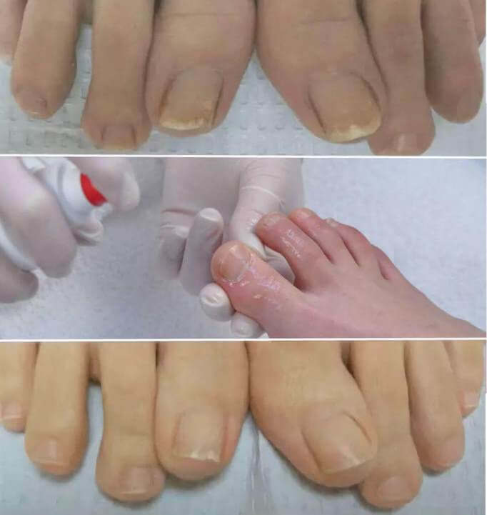

"Metody léčby plísní v Česku způsobují smích" - rozhovor s německým dermatologem.


Před měsícem Leo Hindenburg dorazil do Česka, aby studoval zkušenosti svých českých kolegů. To, co viděl v Česku, způsobilo vlnu negativních emocí mezi jeho německými kolegy. V naší zemi lidé trpící plísní namísto léčby padají do pasti obchodu.

Po vystoupení v Německu souhlasil Dr. Leo Hindenburg s rozhovorem s českou televizní stanicí. Co se nelíbilo slavnému německému lékaři v českých metodách léčby plísňových infekcí? A proč tvrdí, že v Česku nikdo se nezajímá o nemocné?
Redakce: na setkání s německými novináři jste řekl, že to, co jste viděl v Česku, vás šokovalo. Můžete to komentovat?
Leo Hindenburg: od samého začátku chtěl bych poznamenat, že mám pozitivní postoj k České republice, české kultuře a českým občanům. Ale metody, které používáte k léčbě plísňových infekcí, šokují němečtí lékaři. Vaše medicína má úplně jiné cíle. Alespoň v oboru dermatologie.
Podívejte se, co čeští lékaři nabízejí k léčbě plísní? Lamisil, Clotrimazol, Exoderil a další podobné přípravky.
Zatímco jakýkoli evropský lékař vám řekne, že tyto léky nemohou léčit plísně. Prostě nemůžu to udělat. Neúčinnost těchto léků je již dlouho prokázána! Mohou jen skrýt vnější příznaky různými způsoby. A to jen na krátkou dobu. A když účinek skončí, infekce se projeví. Čeští pacienti jsou nuceni tyto léky brát pravidelně.
To vás překvapí, ale v Evropě byly tyto metody léčby plísní zrušeny před 5-7 lety. Výše uvedené léky se používají ve velmi vzácných případech: když je potřeba naléhavě skrýt vnější projevy plísní.
Proč je situace tak odlišná? Vidím to tak, že čeští lékaři nemají zájem o léčbu plísní. Musíte uznat, že je mnohem výhodnější pravidelně prodávat léky a vydělávat peníze na pacientech s plísňovými infekcemi, než je léčit.
Pokud vím, pacienti s plísní v Česku by měli používat bezplatné léky, které je však velmi obtížné získat. Proč? Je v Česku nedostatek léků?
V televizi každý týden mluví o vaší farmaceutické mafii, ale nikdo s ní nebojuje. Proč? Myslím si, že chápete důvod. Pro výrobce léků jsou pacienti s plísněmi pytle peněz!
Redakce: jak probíhá léčba plísňových infekcí v Německu?
Leo Hindenburg: téměř všichni pacienti v Německu se cítí zdravě a přibližně 60 procent bývalých pacientů s plísňovými infekcemi se vrací ke zdravému životu. Jsou zcela vyléčeni z plísňových infekcí. Je to spojeno se zcela odlišným přístupem k léčbě.
Když jsem uviděl české lékařské statistiky, byl jsem šokován. Víte, že plísňové infekce zaujímají třetí místo mezi původci rakoviny v Česku a ustupují jen dědičnosti a obezitě? Pacienti s rakovinou umírají v mladém věku, 80% nežije do 60 let!
Redakce: Je pravda, že v Česku neexistují léky k léčbě plísní?
Leo Hindenburg: v České republice, stejně jako v Evropě, existují léky k léčbě plísní. V České republice je to . byl vyvinut českými specialisty v roce 2015. Pro pohodlné použití je ve formě krému. Většina pacientů je po 4 týdnech zcela vyléčena z plísní!
Obsahuje přírodní složky, které rychle působí na ohniska infekce. Abych vám to dokázal, budu hovořit o několika látkách a jejich působení v boji proti plísním:
| Název látky | Účinek |
| Semenné Máslo Theobroma Kakao | Antimykotický účinek |
| Salvia Officinalis | Dezinfekční a dezodorační účinek |
| Kůra Quercus Robur | Změkčující a exfoliační účinek |
| Glycerin | Chladicí a dezodorační účinek |
Redakce: není na prodej v českých lékárnách?
Leo Hindenburg: Ne. Současně si čeští dermatologové (alespoň ti, kteří se zajímají o pokročilé léčebné metody) uvědomují účinnost u.
Pokud vím, chtěl výrobce u vstoupit na český farmaceutický trh. Ale mu to nepodařilo. Jak již bylo zmíněno, léčba pacientů s plísní v České republice není zisková. Farmaceutika je v současné době podnikání! A to i v Evropě. V Evropě je to však poctivé podnikání (lidé jsou vyléčení), ale ne v České republice!
Redakce: jakou radu můžete dát pacientům s plísněmi v Česku?
Leo Hindenburg: obyčejní lidé, zejména lidé nad 50 let, trpí nejvíce. Naštěstí - existuje řešení. V současné době Dermatologická laboratoř nabízí každému, kdo to potřebuje slevu na . Laboratorní specialisté vyvinuli speciální složení a výrobce poskytl potřebnou dávku léku. Proto si nyní může každý obyvatel České republiky objednat poštou s 50% slevou.
Redakce: jak dlouho bude cena tohoto léku snížena?
Leo Hindenburg: v rámci dostupné zásoby. Chci vás však upozornit, že produkt se slevou končí. Stále více lidí si ho objedná. Čeští pacienti se pravděpodobně dozví o jeho zvýšené účinnosti ve srovnání s běžnými antimykotiky.
Komentáře
-
 Oana CorneaO tomto léků už vím, používala jsem ho v roce 2017 (doporučil dermatolog)! Za týden jsem vyléčila plísní22.22.2222 | Like | Reply
Oana CorneaO tomto léků už vím, používala jsem ho v roce 2017 (doporučil dermatolog)! Za týden jsem vyléčila plísní22.22.2222 | Like | Reply -
 Paul S.trpěl jsem plísní téměř 20 let, ztratil jsem téměř všechny nehty!!! Zítra dostanu poštou! Toto je moje poslední naděje!!!22.22.2222 | Like | Reply
Paul S.trpěl jsem plísní téměř 20 let, ztratil jsem téměř všechny nehty!!! Zítra dostanu poštou! Toto je moje poslední naděje!!!22.22.2222 | Like | Reply -
 Bianca23Kdo to objednal? Vyjádříte prosím svůj názor.22.22.2222 | Like | Reply
Bianca23Kdo to objednal? Vyjádříte prosím svůj názor.22.22.2222 | Like | Reply -
Adelian CosmescuDostal jsem ho včera. Nemohl jsem uvěřit, že jsem dostal 50% slevu. Myslel jsem si, že je to jen k přilákání zákazníků. Lék už mám (začal jsem ho používat), zaplatil jsem přesně poloviční cenu.22.22.2222 | Like | Reply
-
 Tiberij K.Je to dobře řečeno o hlavním cíli českých lékařů. Chtějí jen naše peníze! Nedostáváme kompenzované léky, místo toho najdete spoustu věcí v lékárnách. Kupte a buďte šťastní!!! Úplná lhostejnost. Přál bych si, abych mohl odjet do Německa. Díky za poskytnuté informace.22.22.2222 | Like | Reply
Tiberij K.Je to dobře řečeno o hlavním cíli českých lékařů. Chtějí jen naše peníze! Nedostáváme kompenzované léky, místo toho najdete spoustu věcí v lékárnách. Kupte a buďte šťastní!!! Úplná lhostejnost. Přál bych si, abych mohl odjet do Německa. Díky za poskytnuté informace.22.22.2222 | Like | Reply -
 Vanessa L.Po 20 dnech používání zmizel nepříjemný zápach nohou! Už se nebudu stydět nosit sandály.22.22.2222 | Like | Reply
Vanessa L.Po 20 dnech používání zmizel nepříjemný zápach nohou! Už se nebudu stydět nosit sandály.22.22.2222 | Like | Reply -
 RazvanČetl jsem názory..objednal jsem. čekám na volání.22.22.2222 | Like | Reply
RazvanČetl jsem názory..objednal jsem. čekám na volání.22.22.2222 | Like | Reply -
 Sabina ErhanMoje dospívající dcera má plíseň (nakazila se v bazénu). Kamarádka mi doporučila , ale měla jsem pochybnosti. Teď to určitě vyzkoušíme.22.22.2222 | Like | Reply
Sabina ErhanMoje dospívající dcera má plíseň (nakazila se v bazénu). Kamarádka mi doporučila , ale měla jsem pochybnosti. Teď to určitě vyzkoušíme.22.22.2222 | Like | Reply -
Raluca MolescuKrém???? Vyzkouším to!!!!!!!!22.22.2222 | Like | Reply
-
 Dragoš D.Efektivní.22.22.2222 | Like | Reply
Dragoš D.Efektivní.22.22.2222 | Like | Reply -
 Alexandra KolpanMěla jsem plíseň 15 let a byla jsem velmi zakomplexovaná! Před sedmi dny jsem poštou obdržela . Dermatolog byl překvapen, když uviděl výsledky analýz, plíseň téměř zmizela. Díky!!22.22.2222 | Like | Reply
Alexandra KolpanMěla jsem plíseň 15 let a byla jsem velmi zakomplexovaná! Před sedmi dny jsem poštou obdržela . Dermatolog byl překvapen, když uviděl výsledky analýz, plíseň téměř zmizela. Díky!!22.22.2222 | Like | Reply